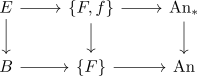

pointed action on the fiber for a fiber sequence
Proposition
Let $F \rightarrow E \rightarrow B$ be a fiber sequence in category of Anima Then there exists an action
\begin{align*}
E \rightarrow \{F\} \subseteq \mathrm{An}_*
\end{align*}
Proof
note that via the classification of fibrations with typical fibre F for anima or some straightening-unstraightening argument the map $E \rightarrow B$ participates in a diagram

in particular we get a map $E \rightarrow \{F,f\} \subseteq \mathrm{An}_*$, so a pointed action.